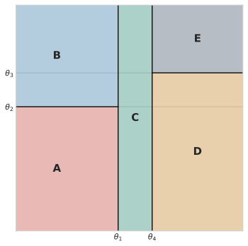


Aula 3 — Fundamentos Estatísticos do Aprendizado Supervisionado
2026-08-30
Se uma árvore não fixa nenhuma família paramétrica antes de ver os dados, ela está livre de qualquer suposição estrutural sobre o problema?
Volte à proposta desta aula antes de responder: “deixar os dados decidirem a forma” é o mesmo que “não assumir nada”?
Dica
Julgue V ou F — a questão só conta se acertar os 4 itens:
Se uma árvore não fixa nenhuma família paramétrica antes de ver os dados, ela está livre de qualquer suposição estrutural sobre o problema?

Sequência de perguntas binárias, cada uma testando uma única variável contra um limiar.
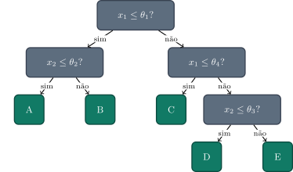
Não é um modelo probabilístico gráfico — não representa uma conjunta com dependências entre variáveis, como as redes de outras partes do curso. É, simplesmente, uma função determinística (dado o treino) que mapeia \(\mathbf{x}\) a uma região, e a região a uma constante.
\[L(\theta;\mathcal{D}) = p(\mathcal{D}\mid\theta) = \prod_{n=1}^N p(\mathbf{x}_n\mid\theta) \qquad \hat\theta_{\text{MLE}} = \arg\max_\theta \ln L(\theta;\mathcal{D})\]
O que muda, na prática, entre “escolher uma família de curvas” e “deixar a partição emergir dos dados”?
Julgue V ou F — a questão só conta se acertar os 4 itens:
O que muda, na prática, entre “escolher uma família de curvas” e “deixar a partição emergir dos dados”?
Assumimos, em cada região terminal \(\mathcal{R}_\tau\), que os alvos seguem uma Gaussiana com média \(y_\tau\) e variância \(\sigma^2\): \[ p(t_n\mid \mathbf{x}_n\in\mathcal{R}_\tau, y_\tau,\sigma^2) = \frac{1}{\sqrt{2\pi\sigma^2}} \exp\!\left(-\frac{(t_n-y_\tau)^2}{2\sigma^2}\right). \]
1. Para os \(N_\tau\) pontos da folha (i.i.d.), a verossimilhança é o produto dessas densidades, e aplicamos o log para transformar produto em soma: \[ \ell_\tau(y_\tau) = \log L_\tau(y_\tau) = \sum_{\mathbf{x}_n\in\mathcal{R}_\tau}\log p(t_n\mid y_\tau,\sigma^2) = \ell_\tau(y_\tau) = -\frac{N_\tau}{2}\ln(2\pi\sigma^2) - \frac{1}{2\sigma^2}\sum(t_n-y_\tau)^2\]
2. O primeiro termo não tem \(y_\tau\) — é constante para a maximização.
3. \(\frac{1}{2\sigma^2}>0\): maximizar \(-\frac{1}{2\sigma^2}(\cdot)\) = minimizar \((\cdot)\). Logo \(\arg\max_{y_\tau}\ell_\tau = \arg\min_{y_\tau} Q_\tau\).
4. \(\frac{dQ_\tau}{dy_\tau}=0 \;\Rightarrow\; y_\tau=\frac{1}{N_\tau}\sum t_n\) — a média, de novo, agora vinda de uma suposição probabilística explícita.
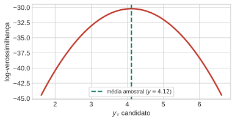
O máximo da log-verossimilhança cai exatamente na média amostral — não é coincidência: prever a média numa folha é o MLE sob um modelo gaussiano com variância compartilhada, não uma convenção arbitrária.
Se a partição já está dada, o \(y_\tau\) ótimo é trivial. O problema difícil é a partição em si: otimizar a estrutura inteira de uma vez é inviável — o número de árvores possíveis explode combinatorialmente.
Saída prática, gulosa: comece com um único nó; a cada passo, busque exaustivamente sobre (a) qual variável cortar e (b) que limiar usar, calcule o \(Q\) resultante nas duas folhas geradas, escolha o menor.
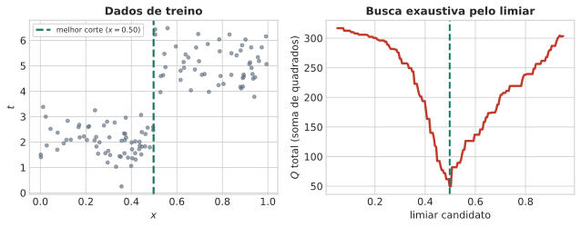
Essa busca é míope por construção: escolhe o corte que minimiza \(Q\) agora, sem olhar o que ele habilita (ou impede) nos próximos níveis. O Bloco 4 volta a este ponto.
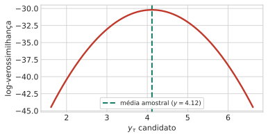
Com poucas folhas, a árvore mal acompanha a curva; com mais folhas, ela aproxima bem — mas nunca deixa de ser uma função em degraus, descontínua nos limiares. Guarde essa observação para o Bloco 5.
Se duas folhas de uma árvore de regressão têm o mesmo número de pontos, a que tem maior soma de quadrados residuais \(Q_\tau\) tem, necessariamente, maior variância dos alvos dentro dela?
Julgue V ou F — a questão só conta se acertar os 4 itens:
Se duas folhas de uma árvore de regressão têm o mesmo número de pontos, a que tem maior soma de quadrados residuais \(Q_\tau\) tem, necessariamente, maior variância dos alvos dentro dela?
1. Comece com uma única região (todos os pontos).
2. Para cada folha atual × cada variável × cada limiar candidato, calcule \(Q\). Escolha o mínimo entre todas as combinações.
3. Corte ali. Repita, até um critério de parada.
Guloso em dois sentidos: o limiar dentro de uma folha, e qual folha aprofundar a cada rodada — a busca é entre todas as folhas abertas ao mesmo tempo, não só dentro de uma escolhida de antemão.
California Housing — preço mediano de imóvel por região, 8 atributos contínuos. Dois cuidados de tratamento:
Amostra de 500 pontos sorteados do treino (16.640 disponíveis) — grande o bastante para uma forma interessante, pequeno o bastante para caber numa tabela.
Restrição a 2 das 8 variáveis — só para desenhar a partição em 2D. Uma árvore de produção buscaria sobre as 8; o algoritmo em si não muda em nada.
MedInc: renda mediana da região, em dezenas de milhares de dólares.HouseAge: idade mediana dos imóveis da região, em anos.MedHouseVal: preço mediano dos imóveis da região, em $100 mil.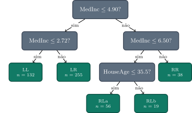
4 cortes reais, sobre dados reais: raiz (MedInc≤4.90) → os dois filhos (MedInc≤2.72 e MedInc≤6.50) → o neto de maior redução de \(Q\) (HouseAge≤35.5, dentro de RL) — 5 folhas ao todo.
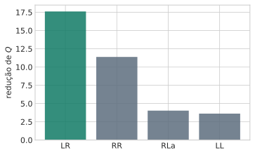
Com as 5 folhas abertas, o algoritmo testa melhor_corte em cada uma e compara a redução de \(Q\) que cada corte ofereceria.
RLb nem entra (só 19 pontos, sem par de $$10 dos dois lados). Entre as demais, LR vence — maior redução de \(Q\), não a folha mais nova nem a de maior \(Q\) inicial.
Por que o algoritmo escolhe cortar a folha LR no quinto passo, e não a folha com o maior \(Q\) atual, nem a que acabou de nascer no quarto corte?
Escreva sua resposta e compare com um colega antes de avançar (2 min).
Dica
Julgue V ou F — a questão só conta se acertar os 4 itens:
RL) não teria acontecido, pois LL (132 pontos) e LR (255 pontos) tinham mais pontos do que RL (113 pontos).RLb tivesse exatamente \(2\times\text{MIN\_POR\_FOLHA}\) pontos no total, isso já garantiria a existência de um limiar candidato válido para cortá-la.LR tinha o maior \(Q\) inicial entre as cinco folhas e também venceu, conclui-se que, em geral, escolher a folha de maior \(Q\) atual é equivalente a escolher a de maior redução possível.LR, e Não Outra Folha? — RespostaDica
RL venceu por maior redução, não por ser a maior; o critério “mais pontos” teria escolhido errado.RL vencendo LL/LR, maiores) já contradiz a regra geral.p=0.10 H(p)=0.3251 nats
p=0.50 H(p)=0.6931 nats
p=0.90 H(p)=0.3251 natsComo \(p(y\mid x)=p(y)\) para todo \(x\) (Aula 2) \(\Rightarrow H(Y\mid X=x)=H(Y)\) para todo \(x\) (mesma distribuição, mesma entropia).
Uma média em que todo termo já vale \(H(Y)\) — a média inteira também vale. Observar \(X\) não ajuda em nada.
\(I(X;Y) = H(Y) - H(Y\mid X)\) — quanto observar \(X\) reduz a incerteza sobre \(Y\).
Forma equivalente: \(I(X;Y) = \sum_{x,y} p(x,y)\ln\dfrac{p(x,y)}{p(x)p(y)}\).
\[ I(X;Y) = 0 \iff p(x,y)=p(x)p(y) \iff X,Y \text{ independentes (Aula 2)} \]
\(I(X;Y)\geq 0\) sempre — nunca negativa (desigualdade de Jensen).
Aula 2: “grátis” (\(G\)) e “ganhador” (\(W\)) eram condicionalmente independentes dada a classe, mas \(p(G{=}1,W{=}1)=0{,}255\) vs. \(p(G{=}1)p(W{=}1)=0{,}136\) — dependentes, célula a célula.
Agora podemos medir a dependência inteira, num único número, em nats:
\(I(G;W) > 0\) confirma, com um número o que o que a Aula 2 discutiu.
A pergunta mais relevante para uma árvore não é “\(G\) e \(W\) dependem entre si?”, é “dizem algo sobre a classe?” — \(I(G;\mathcal{C})\) e \(I(W;\mathcal{C})\).
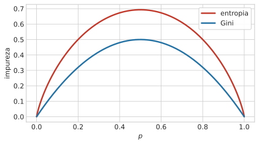
“Grátis” reduz quase o dobro da incerteza sobre a classe — apesar de \(W\) ter, sozinha, menos entropia própria (\(H(W)<H(G)\)). Esse número é o ganho de informação — \(I(\text{variável};\text{classe})\) — o critério que a próxima seção usa para escolher onde cortar.
Se uma variável candidata a corte tem entropia própria \(H(X)\) baixa (ela já é bem previsível), isso garante que ela também é pouco informativa sobre a classe, \(I(X;\mathcal{C})\) baixo?
Pense no exemplo de “ganhador” antes de responder.
Julgue V ou F — a questão só conta se acertar os 4 itens:
Se uma variável candidata a corte tem entropia própria \(H(X)\) baixa, isso garante \(I(X;\mathcal{C})\) também baixo?
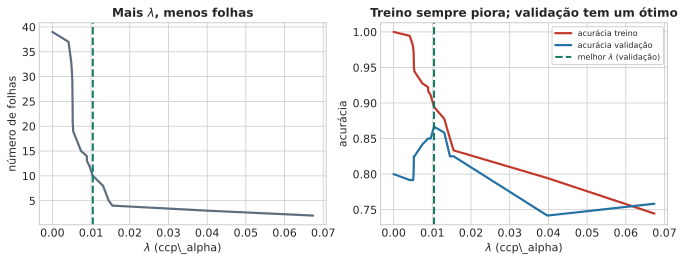
Índice de Gini: \(G(p)=\sum_k p_{\tau k}(1-p_{\tau k})\) — a probabilidade de errar classificando um ponto sorteado da folha com um segundo rótulo, também sorteado segundo \(p_\tau\). Interpretação própria, não uma conexão de verossimilhança tão direta quanto a entropia; mesmo formato geral, computacionalmente mais barato (sem logaritmo).
Uma formulação sem o sinal negativo, em algumas fontes, descreve “máximo em \(p=0{,}5\)” — só consistente com a convenção padrão (com o sinal). Usamos a padrão aqui.
Cada ponto de classe \(k\) contribui \(p_{\tau k}\); agrupando os \(n_{\tau k}\) pontos de cada classe, sujeito a \(\sum_k p_{\tau k}=1\): \[\ell_\tau(p_\tau) = \sum_k n_{\tau k}\ln p_{\tau k}\]
1. \(p_\tau\) vive num simplex (\(\sum_k p_{\tau k}=1\)) — não é uma maximização livre. Monte o Lagrangiano: \[\mathcal{L}(p_\tau,\lambda) = \sum_k n_{\tau k}\ln p_{\tau k} + \lambda\Big(1-\sum_k p_{\tau k}\Big)\]
2. Derive em relação a cada \(p_{\tau k}\), iguale a zero: \[\frac{\partial \mathcal{L}}{\partial p_{\tau k}} = \frac{n_{\tau k}}{p_{\tau k}} - \lambda = 0 \;\Rightarrow\; p_{\tau k} = \frac{n_{\tau k}}{\lambda}\] Máximo proporcional à contagem — falta fixar \(\lambda\).
3. Use a restrição \(\sum_k p_{\tau k}=1\) para achar \(\lambda\): \[\sum_k \frac{n_{\tau k}}{\lambda} = \frac{N_\tau}{\lambda}=1 \;\Rightarrow\; \lambda=N_\tau \;\Rightarrow\; \hat p_{\tau k} = \frac{n_{\tau k}}{N_\tau}\]
4. Substitua \(\hat p_\tau\) de volta em \(\ell_\tau\) (usando \(n_{\tau k}=N_\tau\hat p_{\tau k}\)): \[\ell_\tau(\hat p_\tau) = \sum_k n_{\tau k}\ln\hat p_{\tau k} = N_\tau\sum_k \hat p_{\tau k}\ln\hat p_{\tau k} = -N_\tau\, H(\hat p_\tau)\] onde \(H(p)=-\sum_k p_k\ln p_k\) é a entropia.
\[\textbf{maximizar log-verossimilhança} \equiv \textbf{minimizar entropia}\]
É exatamente o critério mais comum para cortar uma árvore de classificação — só que costuma ser apresentado como “reduzir a impureza”, sem essa conexão com verossimilhança explicitada. Mesma equivalência do Bloco 2 (mínimos quadrados = MLE gaussiano), agora do lado categórico: lá a restrição vinha de derivar \(Q_\tau\) direto; aqui veio de um Lagrangiano, porque \(p_\tau\) vive num simplex — mas o padrão é o mesmo.
Split 1: (300,100) | (100,300) — 400 pontos cada.
Split 2: (400,200) | (0,200) — a direita é pura.
Antes de calcular: mesma qualidade, olhando só a taxa de erro?
Nó pai: entropia=0.6931 gini=0.5000
Split 1: erro=0.2500 entropia=0.5623 (IG=0.1308) gini=0.3750 (ganho=0.1250)
Split 2: erro=0.2500 entropia=0.4774 (IG=0.2158) gini=0.3333 (ganho=0.1667)Mesma taxa de erro (0,25) — mas o Split 2 tem o maior ganho de informação (\(IG\approx0{,}216\) contra \(0{,}131\) nats). A taxa de erro bruta é cega a essa diferença: só olha quem “ganha a maioria”, não o quão desequilibrada é essa maioria.
Entropia/Gini são diferenciáveis e mais sensíveis à composição interna da folha — por isso preferidas para crescer; a taxa de erro bruta, mais grosseira, fica reservada para podar.
Dica
Julgue V ou F — a questão só conta se acertar os 4 itens:
Dica
Todo modelo até aqui foi ajustado do mesmo jeito: cresça até explicar o treino o melhor possível. Um modelo com liberdade suficiente reduz o erro de treino a quase zero — memorizando a amostra, não o padrão.
Não se quer o modelo que erra menos no treino — se quer o que erra menos em dados novos.
Essa tensão — custo (erro de treino) vs. complexidade (graus de liberdade) — reaparece o curso inteiro (regularização, seleção de modelo, vício-variância da Aula 4). Em árvores, o nome é custo-complexidade; há dois grupos de mecanismo: limitar o crescimento durante a construção (critérios de parada) ou deixar crescer livre e cortar depois (poda).
Altura máxima (max_depth) — quantos cortes separam a raiz de qualquer folha.
Mín. amostras por folha (min_samples_leaf) — impede folhas com poucos pontos (base amostral mínima para \(\hat\mu_\tau\)/\(\hat p_{\tau k}\)).
Mín. amostras para tentar um corte (min_samples_split) — mesma ideia, verificada antes de avaliar candidatos a corte no nó.
Máx. de folhas (max_leaf_nodes) — limita \(|T|\) diretamente, como teto fixo em vez de penalidade.
Ganho mínimo de impureza (min_impurity_decrease) — só aceita um corte que reduza a impureza por um valor mínimo fixo.
Os cinco critérios acima agem durante a construção, olhando só a decisão local de cada nó — são pré-poda (pre-pruning).
A poda propriamente dita (post-pruning) é o caminho inverso: deixar crescer por completo, decidir o corte depois.
Dica
Um teto fixo (max_depth, max_leaf_nodes, …) vale igual para toda a árvore — mesmo que um ramo se beneficiasse de mais profundidade e outro, de menos. A poda não tem essa limitação.
Empiricamente: nenhum corte disponível reduz o erro de forma perceptível, mas algumas divisões depois, uma redução substancial aparece. Parar cedo (“pare quando o próximo corte não ajudar”) perde esse ganho adiado.
Prática: crescer uma árvore grande, sem preocupação com overfitting, e depois podar de volta por custo-complexidade: \[C(T) = \underbrace{\sum_\tau Q_\tau(T)}_{\text{custo}} + \underbrace{\lambda|T|}_{\text{complexidade}}\]
\(\lambda=0\): puro custo, a árvore completa sempre vence. \(\lambda\) grande: penaliza fortemente a complexidade, poda forte. Não há um \(\lambda\) “correto” universal — depende do ruído nos dados e é escolhido empiricamente.
Treino: os dados usados para ajustar tudo — cortes, médias, proporções de folha.
Validação: reservada desde o início, nunca usada para ajustar nada — só para medir, depois de pronta, o quão bem a árvore se sai.
Medir erro nos mesmos dados do ajuste é uma estimativa otimista — o caso extremo é a própria árvore completa, que pode chegar a \(100\%\) de acerto no treino sem dizer nada sobre dados novos.
Aqui: a versão mais simples possível — uma única divisão \(60\%/40\%\), sorteada uma vez. Desperdiça dados e depende de qual divisão saiu no sorteio; a Aula 4 resolve os dois problemas reamostrando repetidamente.
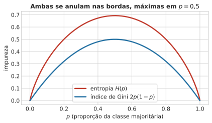
Árvore completa: 39 folhas
Melhor lambda (validação): 0.0104 -> 10 folhasA acurácia de treino só piora conforme \(\lambda\) cresce e a árvore encolhe (menos capacidade de memorizar). A de validação tem um ponto ótimo no meio — nem a árvore completa (overfitting), nem a excessivamente podada (underfitting).
Por que “pare quando o próximo corte não reduzir muito o erro” é uma estratégia de parada ruim?
Julgue V ou F — a questão só conta se acertar os 4 itens:
Por que “pare quando o próximo corte não reduzir muito o erro” é uma estratégia de parada ruim?
Toda fronteira de árvore é uma sequência de cortes paralelos aos eixos — ótimo se a fronteira verdadeira também é; péssimo se não é. O caso mais claro: duas gaussianas com covariância compartilhada e correlacionada (Aula 2), cuja fronteira ótima é uma única reta, não alinhada aos eixos.
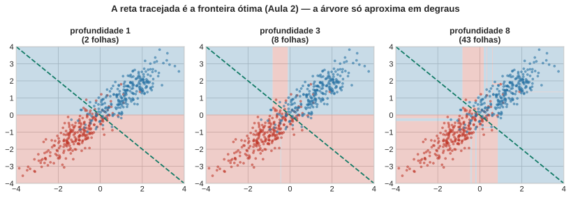
Mesmo com 8 níveis, a árvore aproxima a diagonal com uma escadinha — nunca alcança a reta, precisa de folhas cada vez mais numerosas para chegar perto. A gaussiana resolve com uma única direção, porque sua forma já é adequada a esse tipo de fronteira: forma fixa é ótima quando acerta o formato certo; árvore é ótima quando não se sabe (ou não se quer assumir) qual é esse formato.
A estrutura aprendida é sensível a detalhes do treino — remover ou adicionar poucos pontos pode mudar qual variável e limiar são escolhidos no corte da raiz, que reverbera por toda a árvore abaixo.
Corte da raiz, árvore original: x_2 <= 0.014
Corte da raiz, com 5 pontos a menos: x_2 <= -0.113Só \(1\%\) dos pontos removidos já desloca o limiar de \(0{,}014\) para \(-0{,}113\) — mesma variável, corte bem diferente. Algo que não aconteceria com um ajuste de mínimos quadrados, cujo hiperplano se move suavemente com pequenas mudanças nos dados.
Essa fraqueza vira ingrediente útil na Aula 9 (bagging: média de muitas árvores levemente diferentes).
Terceira limitação, já vista na figura da senoide (Bloco 2): cada ponto pertence a exatamente uma folha, e a previsão salta no limiar entre folhas vizinhas.
Neutro em classificação (uma fronteira sempre existe em algum lugar); ruim em regressão quando o alvo verdadeiro é uma função suave — a árvore cria descontinuidades exatamente onde a função não tem nenhuma.
Dica
Julgue V ou F — a questão só conta se acertar os 4 itens:
Dica
Nenhum dos dois extremos (sempre linear vs. totalmente livre) é gratuito. Forma fixa: barata e estável, erra sistematicamente quando o formato certo não é o assumido. Árvore: acerta qualquer formato, paga em instabilidade e miopia gulosa.
1. O que uma árvore está estimando? Uma função constante por partes — de \(p(\mathcal{C}_k\mid\mathbf{x})\) ou de \(\mathbb{E}[t\mid\mathbf{x}]\) —, cuja forma (não só os parâmetros) vem dos dados.
2. Por que “reduzir a impureza” é maximizar verossimilhança? A proporção empírica de classes numa folha é o MLE categórico; maximizar essa log-verossimilhança é, algebricamente, minimizar a entropia — mesmo argumento que já valia para a média em regressão.
3. Que preço se paga pela liberdade? Splits alinhados aos eixos podem ser muito subótimos, a estrutura é instável a pequenas mudanças no treino, e a partição é rígida — descontinuidades que uma função suave não tem.
Ponte para a Aula 4: como escolher, de forma sistemática, o tanto de complexidade certo — o \(\lambda\) de poda, ou qualquer outro hiperparâmetro?
UNICAMP — Instituto de Computação